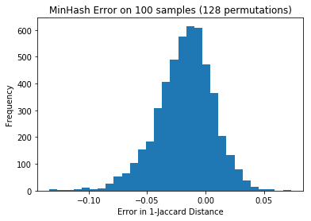

Detecting Near Duplicates with Minhash
I’m trying to find near duplicates texts in the Adzuna Job Salary Predictions Kaggle Competition. I’ve found that that the Jaccard index on n-grams is effective for finding these. Unfortunately it would take about 8 days to calculate the Jaccard index on all pairs of the 400,000 ads, and take about 640GB of memory to store it. While this is tractable we can find almost all pairs with a significant overlap it in half an hour in-memory using MinHash.
MinHash is a very clever probabilistic algorithm that trades off time and memory for accuracy, and was developed at Alta Vista for clustering similar web pages. The algorithm finds elements that have a large approximate Jaccard index; which we’ve already seen is effective for finding similar texts. The underlying idea is if you randomly order the items from the sets the chance that the smallest item is in both sets is equal to the number of elements in both sets divided by the number of elements in either set - which is exactly the Jaccard index. We can create a number of these orderings efficiently with Universal Hashing and only need to store the minimum element of each for each hash function. Then the Jaccard index between two items is approximately the number of equal minimum elements from the different hash functions. There is some chance of false collisions with the hash functions, but with several hash functions the impact is smaller.
There’s actually a whole family of these sketch algorithms that tradeoff time and memory for precision in the same way Jaccard does like the Bloom Filter for set membership, HyperLogLog for counting distinct items, and the Count-min sketch for frequency tables.
The MinHash can be used to efficiently search through near-duplicates using Locality Sensitive Hashing as explored in the next article. In this article we’ll look at calculating the minhash and how well it works as an approximation to Jaccard.
Implementation
I use the excellent datasketch library for calculating the MinHash and finding near duplicates. We can calculate the minhash of an arbitrary sequence of strings with this function.
from datasketch import MinHash, LeanMinHash
import xxhash
def minhash(seq:List[str], num_perm=num_perm):
m = MinHash(num_perm=num_perm, hashfunc=xxhash.xxh64_intdigest)
for s in seq:
m.update(s.encode('utf8'))
return LeanMinHash(m)Note that we’re using xxhash to hash the items because it’s much faster than the default SHA1 from Python’s hashlib. The parameter num_perm corresponds is the number of different hash functions to use; setting it higher improves accuracy but runs slower; I used 128. It returns a LeanMinHash to save some memory.
How effective is the MinHash approximation?
As a starting point I tested it on all pairs of the first 100 job ads:
minhashes = []
for i in range(100):
minhashes.append(minhash(tokenize(ads[i])))
mh_distances = {}
for i in range(100):
for j in range(100):
if i < j:
mh_distances[(i, j)] = minhashes[i].jaccard(minhashes[j])and compared the result with the exact Jaccard distance:
jaccard_distances = {}
for i in range(100):
for j in range(100):
if i < j:
jaccard_distances[(i,j)] = jaccard(tokenize(ads[i]), tokenize(ads[j]))The minhash values tended to be slightly higher, and look normalish with a standard deviation of 0.025:
import matplotlib.pyplot as plt
diffs = [jaccard_distances[k] - v for k,v in list(mh_distances.items())]
p = plt.hist(diffs, bins=30)
However it doesn’t matter so much how much error there is in general because we’re going to use it to try to detect pairs with a high overlap. So what we really want to know is what’s the relative error for pairs. Doing a scatter plot of them makes it clear the approximation works quite well (as we’d expect on theoretical grounds), and we don’t need to increase the number of permutations:
plt.hexbin([jaccard_distances[k] for k in mh_distances], list(mh_distances.values()), bins='log')
plt.xlabel('Jaccard Distance')
plt.ylabel('MinHash approximation')
plt.title('MinHash correlates very well with Jaccard')
MinHashing a Corpus
I created a convenience function to calculate MinHashes for a corpus. This is the time consuming step; these can be stored (e.g. with pickle) for later search.
def get_minhashes(corpus, n_shingle=1, preprocess=tokenize):
return [minhash(shingle(preprocess(text), n_shingle)) for text in corpus]This takes about 30 minutes on a single core for the 400,000 job ads (it is trivially paralellisable). The output pickle file is 200MB, so it’s about 0.5kB per job ad (where we’re essentially representing the ad as a bag of tokens).
i = 3
minhashes = get_minhashes(ads, n_shingle=i)
with open(f'minhash_{i}.pkl', 'wb') as f:
pickle.dump(minhashes, f)